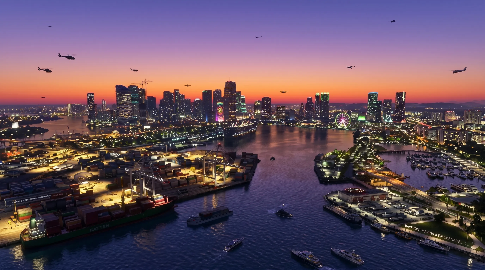

GTA 6 Ferris Wheel Reflection Missing: What Rockstar's Ray Tracing BVH Bug Reveals About RAGE Engine Performance

The GTA 6 Ferris wheel has no water reflection because Rockstar's RAGE Engine Bounding Volume Hierarchy (BVH) deliberately excludes it from the ray tracing pass — a GPU performance optimization targeting stable console frame rates at the Fall 2026 launch. Digital Foundry analyst Thomas Morgan confirmed this in his technical breakdown of the June 2026 GTA 6 trailer, which also revealed the game's pre-order date, official cover art, and 80s-inflected soundtrack. This is not a conventional rendering glitch; it's a selective resource allocation decision that provides a rare, unguarded look at the performance trade-offs Rockstar is navigating as Vice City's release approaches on PS5 and Xbox Series X.
The implications extend well beyond trailer frame-counting. GTA 6 runs on a significantly evolved RAGE (Rockstar Advanced Game Engine) configured with hybrid ray tracing across Vice City's vast waterfront environment. When one specific object — the Ferris wheel — generates zero reflection while nearby skyscrapers render theirs flawlessly, it exposes exactly how Rockstar's rendering pipeline assigns ray tracing resources across an open world of this scale. This breakdown covers what happened, why it happened, and what the GTA 6 missing Ferris wheel reflection signals about graphics and performance on consoles when the game ships.
GTA 6's New Trailer: Pre-Order Date, Cover Art — and a Hidden Ray Tracing Anomaly
The June 2026 GTA 6 trailer delivered on multiple fronts simultaneously. Rockstar announced the pre-order date, dropped the official cover art featuring the game's dual protagonists, and embedded a short gameplay clip directly on Rockstar's official website. That clip — just 10 seconds of Vice City's nighttime skyline — quickly became the subject of a frame-by-frame Digital Foundry analysis that uncovered a graphics anomaly Rockstar has not publicly addressed.
The footage shows Vice City's downtown waterfront under a night sky, with surrounding skyscrapers and architectural surfaces reflecting stably and cleanly across the bay. The anomaly is positioned at the edge of the frame: a Ferris wheel at the far side of the bay that produces zero reflection in the water below it. Every major building in the same shot reflects. The Ferris wheel does not. Thomas Morgan's analysis confirmed this isn't a camera angle artifact, a video compression issue, or an object simply too distant to reflect — the reflection is genuinely absent from both the ray-traced pass and the screen space fallback layer simultaneously, which is the technical fingerprint of a deliberate per-object configuration rather than a distance-based limitation.
The Ferris Wheel That Casts No Reflection — What Digital Foundry's Frame-by-Frame Analysis Found
Digital Foundry's Thomas Morgan subjected the 10-second clip to pixel-level scrutiny and produced the most technically precise GTA 6 graphics analysis available to date. His core finding: GTA 6 uses a hybrid reflection architecture that pairs hardware ray-traced reflections for primary scene geometry with screen space reflections (SSR) as a lower-cost fallback for content near screen edges where ray tracing isn't cost-effective.
The ray-traced reflections Morgan examined demonstrate zero occlusion artifacts — a definitive indicator of genuine hardware RT rather than an SSR approximation. Buildings remain accurately reflected in the bay even when a helicopter passes between the camera position and the reflected building geometry, a test that SSR fails categorically because it can only work with what is visible on screen. The reflected images do appear noticeably brighter than their corresponding source objects in the primary scene, which Morgan attributes to separate tone-mapping applied to the ray-traced reflection buffer within the RAGE Engine's rendering pipeline — a characteristic observed in other RAGE-powered Rockstar titles and a detail that confirms the sophistication of the GTA 6 lighting model.
Against this technically impressive backdrop, the Ferris wheel's complete absence stands out clearly. No RT reflection. No SSR fallback reflection. The water surface beneath it renders as though the object doesn't exist. This combination — missing from both reflection systems simultaneously — is the signature of a deliberate BVH object exclusion flag rather than a general rendering limitation, a draw distance cutoff, or a work-in-progress placeholder left unfinished.
Also Read
More Gaming stories →Ray Tracing vs. Screen Space Reflections — How GTA 6's Hybrid System Actually Works
Understanding exactly why the GTA 6 Ferris wheel reflection is absent requires a clear picture of how the game's two-layer reflection system operates and where each technique is cost-effective.
Ray tracing (RT) generates reflections by casting virtual light rays from the camera into the scene and calculating physically accurate reflection paths based on real surface geometry and material properties. The result is reflection data that remains stable regardless of camera movement, persists for off-screen objects within range, and produces none of the edge-case artifacts that rasterization methods generate. It is computationally expensive — cost scales with scene geometry complexity, material complexity, and the number of rays cast per pixel. In GTA 6, ray tracing handles the primary reflection workload for major architectural geometry across Vice City's extensive water bodies, and Morgan's analysis confirms this delivers convincing, artifact-free results for buildings and large structures.
Screen Space Reflections (SSR) is a rasterization-based technique that generates reflections using only what is currently visible on screen. SSR is significantly cheaper than RT but comes with hard limitations: it cannot reflect off-screen objects, breaks down at screen edges where screen-space data ends, and produces artifacts during rapid camera movement. In GTA 6, SSR acts as a complementary fallback — filling in reflection data in areas where full ray tracing is not cost-effective, particularly near screen edges and for secondary surfaces where RT quality isn't essential.
The hybrid architecture is a proven strategy for delivering high-quality reflections within the GPU budgets of current console hardware. By allocating full RT processing to the highest-impact geometry and using SSR to cover gaps at minimal additional cost, Rockstar achieves visually compelling waterfront reflections across Vice City without pushing the PS5's RDNA 2-based GPU into frame-time instability. The Ferris wheel's complete absence from both systems, however, points to a more specific, object-level configuration decision that sits above and beyond the normal hybrid system behavior.
Key Takeaways
- GTA 6 uses a two-layer reflection pipeline: hardware ray-traced reflections for primary scene architecture, with SSR as a cost-effective fallback at screen edges.
- The Ferris wheel is absent from both the RT reflection pass and the SSR fallback — the technical signature of a deliberate BVH object exclusion flag, not a general rendering limitation.
- Per-object BVH exclusion is standard AAA practice used in Cyberpunk 2077, Alan Wake 2, and Spider-Man 2 to manage GPU performance on console hardware.
- Trailer footage is a work-in-progress build; BVH configuration flags are low-friction to adjust before the Fall 2026 retail launch if Rockstar chooses to do so.
Why the Ferris Wheel Isn't Reflected in GTA 6: BVH Object Exclusion Explained in Detail
The Bounding Volume Hierarchy (BVH) is the data structure that makes real-time ray tracing computationally viable in a game like GTA 6. Rather than testing every cast ray against every polygon in Vice City's enormous open world — which would be prohibitively expensive — the ray tracing engine traverses the BVH, a hierarchical tree of bounding volumes that rapidly identifies which objects a given ray could possibly intersect. BVH traversal cost scales with the complexity and quantity of geometry included in the hierarchy.
Developers can configure which objects get included in the BVH for specific render passes. Excluding an object from the reflection BVH means that rays cast specifically for the water reflection pass will never test against that object — rendering it completely invisible in reflections while leaving it fully rendered and visible in the primary scene. This is not a bug in the conventional sense. It is a deliberate, per-object flag applied within the asset pipeline, identical in function to how a developer might flag an object as non-shadow-casting to save shadow map cost.
The GTA 6 Ferris wheel carries this exclusion flag for both the RT reflection BVH and the SSR depth pre-pass, which is precisely why neither system renders its reflection. The most technically grounded explanation for the exclusion is cost relative to visual impact: the Ferris wheel is a structurally complex, continuously moving object with hundreds of individually rendered components — the outer rotating ring, radial spokes, hanging gondolas, and lighting rigs all in constant motion. Ray tracing a rotating, multi-component object in reflections requires significantly more BVH traversal steps per frame than reflecting a static rectangular building facade, where a single large bounding volume resolves quickly. Removing it from the reflection BVH eliminates that compounding per-frame cost entirely.
This type of selective BVH configuration is standard practice in modern AAA ray tracing. Cyberpunk 2077, Alan Wake 2, and Marvel's Spider-Man 2 all apply per-object RT inclusion flags to balance GPU load across demanding environments. The difference with GTA 6 is the visibility of the trade-off — a large, prominently positioned, and brightly lit Ferris wheel against an otherwise reflection-rich Vice City nighttime skyline makes the exclusion immediately detectable to attentive observers, in a way that a missing reflection on a small background prop never would be.
What GTA 6's Missing Reflection Reveals About Rockstar's Console Performance Budget
The Ferris wheel's BVH exclusion provides a concrete, specific data point about how Rockstar is distributing GTA 6's ray tracing budget across Vice City's open world. The environment is substantially larger and more geometrically dense than anything in GTA V or Red Dead Redemption 2, and Rockstar is simultaneously targeting ray-traced reflections across Vice City's expansive bay and waterfront — a workload combination that places significant ongoing pressure on console GPU resources.
Console ray tracing operates under fundamentally different constraints than PC ray tracing. The PS5's RDNA 2-based GPU supports hardware-accelerated BVH traversal, but at substantially lower throughput than a contemporary high-end PC graphics card. Maintaining a stable 30fps or 60fps output while simultaneously rendering Vice City's full geometry, dynamic weather systems, dense NPC and traffic simulation, and ray-traced reflections across large bodies of water leaves limited headroom for complex geometry in the RT reflection pass.
The Ferris wheel presents an unfavorable cost-to-benefit ratio for the RT reflection pass specifically. A large rectangular building occupies a simple bounding volume that ray tracing resolves efficiently — the geometry is static, the bounding box is tight, and traversal terminates quickly. A Ferris wheel's circular geometry, individual gondola geometry, radial spoke structure, and frame-by-frame rotation introduce compounding BVH traversal cost per reflection ray that a static architectural structure never generates. Excluding it from the reflection BVH preserves frame time budget for geometry where RT reflection quality is more visually meaningful to the player during active gameplay.
For console players, this signals that GTA 6's ray tracing will be carefully curated rather than comprehensively applied. The waterfront reflection quality shown in the trailer is genuinely impressive — stable, high-quality, artifact-free reflections across a large urban bay. But it represents a selective allocation of RT resources managed at the per-object level, not a blanket application of ray tracing to everything in the scene. That is the practical reality of delivering hardware ray tracing in a stable open-world title on current console hardware in 2026, and Rockstar appears to be managing it with the same technical discipline seen in the best RT console titles released to date.
Will Rockstar Fix the Missing Ferris Wheel Reflection Before GTA 6 Launches in Fall 2026?
Digital Foundry's position is measured and technically grounded: the missing GTA 6 Ferris wheel reflection is a ray tracing configuration quirk that could realistically be adjusted before the final retail build ships. BVH object inclusion flags sit among the most modifiable parameters in late-stage game development — they require no code changes, only configuration updates in the asset pipeline, and can be toggled without risking broader rendering stability. If the exclusion originated from conservative early performance profiling, a pre-launch optimization pass targeting improved hardware utilization could include the Ferris wheel in the RT reflection BVH without major risk.
Two complicating variables work against a confident prediction. Camera distance critically affects ray tracing behavior, including threshold distances for RT reflection draw ranges and SSR capture volumes. The trailer footage captures the Ferris wheel at a specific view distance that may place it near the boundary of the RT reflection draw distance or just outside the SSR capture volume. At closer gameplay distances — when the player navigates the Vice City waterfront on foot or in a vehicle — the same Ferris wheel might reflect cleanly in both systems under normal conditions. A fixed 10-second trailer clip cannot replicate the dynamic camera conditions of active gameplay.
Second, if the BVH exclusion is a deliberate, permanent performance decision rather than a configuration oversight, Rockstar may leave it unchanged in the retail build. The Ferris wheel sits at the periphery of the trailer camera angle and at the far edge of the bay; during active gameplay, the vast majority of players would never notice a missing background reflection while navigating missions, driving through Vice City's streets, or engaging with the game's dense simulation systems. If retaining the exclusion is what enables a 60fps performance mode or a higher-fidelity 30fps mode, it is a fully justifiable engineering trade-off.
The retail build will deliver the only definitive answer. Until then, the GTA 6 Ferris wheel reflection stands as the most informative publicly visible evidence of how Rockstar's RAGE Engine is distributing ray tracing resources across Vice City ahead of the Fall 2026 launch — and it tells a coherent, technically sound story about the realities of console ray tracing at this scale.
Frequently Asked Questions
What is the GTA 6 missing Ferris wheel reflection mystery?
In the June 2026 GTA 6 trailer embedded on Rockstar's official website, a Ferris wheel on the Vice City skyline casts zero reflection in the water below — despite surrounding buildings reflecting clearly and stably in both ray-traced and screen-space data. Digital Foundry analyst Thomas Morgan identified the cause as the RAGE Engine's Bounding Volume Hierarchy (BVH) configuration excluding the Ferris wheel from the ray tracing reflection pass to reduce GPU processing cost on console hardware. The Ferris wheel appears in neither the RT reflection pass nor the SSR fallback layer, confirming a deliberate per-object configuration decision rather than a general rendering failure or a distance-based limitation.
Does GTA 6 use ray tracing?
Yes. Analysis of the June 2026 GTA 6 trailer confirms the game uses a hybrid reflection pipeline: hardware ray-traced reflections handle primary scene geometry across Vice City's water bodies, while screen space reflections (SSR) serve as a lower-cost fallback at screen edges. The ray-traced reflections display no occlusion artifacts and remain stable when helicopters fly between the camera and reflected buildings — a signature characteristic of genuine hardware ray tracing rather than an SSR approximation. Reflected images appear slightly brighter than their source geometry, pointing to separate tone mapping applied to the RT reflection buffer inside the RAGE Engine, consistent with the rendering approach seen in other high-fidelity RT titles.
Why isn't the Ferris wheel reflected in GTA 6's water?
GTA 6's RAGE Engine uses a Bounding Volume Hierarchy (BVH) to determine which objects participate in each render pass. Developers can exclude individual objects from the RT reflection BVH, making them invisible in reflections while fully rendered in the primary scene view. The Ferris wheel appears to carry this exclusion flag for both the RT reflection pass and the SSR depth capture — likely because its continuously rotating geometry (outer ring, individual gondolas, spoke structure) makes it disproportionately expensive to ray trace in reflections relative to its visual contribution to the scene. Excluding it from the BVH removes that per-frame GPU cost entirely while affecting only a background reflection most players would not notice during active gameplay.
Will Rockstar fix the missing Ferris wheel reflection before GTA 6 launches?
Digital Foundry characterizes the issue as a ray tracing configuration quirk that could plausibly be adjusted before the retail build. BVH object inclusion flags are among the lowest-friction parameters to modify in late-stage development — requiring only asset pipeline configuration updates, not code changes. However, if the exclusion is a deliberate performance decision rather than an oversight, Rockstar may retain it in the final game. Camera distance also critically affects ray tracing behavior; at closer in-game distances the Ferris wheel may reflect normally. A 10-second trailer clip cannot replicate dynamic gameplay camera conditions, so only the shipping retail build provides a definitive answer.
When is GTA 6 available for pre-order?
The June 2026 GTA 6 trailer confirmed pre-orders are now live through major retailers and digital storefronts, alongside the reveal of the official cover art and 80s-inflected soundtrack. GTA 6 is expected to launch in Fall 2026 for PS5 and Xbox Series X. Rockstar has not announced a simultaneous PC release for the initial launch window, consistent with the studio's past multi-platform release patterns.
What does GTA 6's hybrid reflection system mean for console performance?
GTA 6's two-layer reflection pipeline — hardware ray tracing for primary scene geometry, SSR as an edge-case fallback — is a proven high-budget console optimization strategy. Concentrating the ray tracing budget on major architectural surfaces where reflection accuracy delivers the highest visual impact allows Rockstar to deliver compelling waterfront reflections while managing frame rate targets on PS5's RDNA 2-based GPU. The Ferris wheel's BVH exclusion is a direct instance of this management in action: a geometrically complex, continuously moving object removed from the RT pass to preserve frame time for higher-priority scene elements. The approach signals Rockstar is targeting a stable, consistent performance output for Fall 2026 — whether 30fps or 60fps — rather than allowing reflection quality to vary dynamically in ways that generate frame time spikes during dense open-world traversal.
Conclusion
The GTA 6 Ferris wheel reflection is absent from the Vice City waterfront because Rockstar's RAGE Engine is making exactly the kind of performance management decisions a mature, production-ready ray tracing pipeline requires: allocating expensive GPU ray tracing budget selectively, weighted by visual impact versus computational cost. Digital Foundry's Thomas Morgan has delivered the clearest technical picture of GTA 6's graphics architecture available before launch — and it shows a team carefully managing one of the most demanding ray tracing workloads ever attempted in a console open-world title. The per-object BVH exclusion technique the Ferris wheel reveals is not a sign of technical limitation; it is evidence of deliberate engineering discipline applied at the asset level.
Whether the GTA 6 Ferris wheel reflection gets corrected in the retail build depends on Rockstar's final optimization pass and their confirmed performance targets. What the June 2026 trailer footage already establishes is that the RAGE Engine's hybrid RT/SSR system delivers stable, high-quality reflections across Vice City's waterfront, that per-object BVH configuration operates at a granular level in GTA 6's rendering pipeline, and that Fall 2026 will bring the most technically sophisticated open-world rendering seen on PS5 and Xbox Series X. The missing GTA 6 Ferris wheel reflection may be resolved before launch — but its discovery has revealed more about Rockstar's engine priorities and engineering approach than any official technical disclosure the studio has made to date.

Marcus J. Holloway
Senior Tech Educator & AI Researcher
Technology and gaming journalist with 15+ years of experience covering Nintendo, Sony, and Microsoft platforms. Has tracked Zelda franchise developments across every generation from N64 to Switch 2. Dedicated to making complex gaming industry developments accessible to readers worldwide through Ultimate Schooling.
💬 Questions or Comments?
Have a question about this tutorial or want to share your thoughts? Leave a comment below!